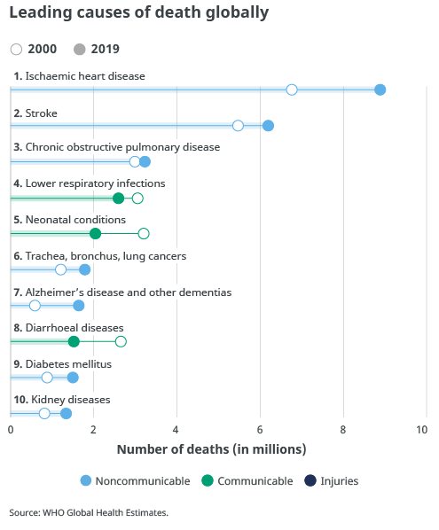

Learn more
Welcome to Electrocardiogram Artificial Intelligence ECG.AI, this is the platform where you can learn about how we developed, thought of, and created ECG.AI. Through this process expect to learn about the matter of heart disease, and how we can help eradicate it with ECG.AI.
ECGAI
Our project works by analizing ECG charts and other vitals (E.G. Heart rate) that are linked to it, it uses this data in diagnosing potential dieseases and dangerous that may come from such, like diagnosing heart diseases that may appear in ECG charts and dangers that may appear from heart rate rythems and very high Beats Per Minute(BPM) or very low BPM or other diseases and dangers that may appear from analyzing other vitals that may be linked to the device.
Why us?
ECG.AI is known for being interactive with the community. During our time in ox-medica’s 3 week program our team was known for engaging with the community. We made sure that all of our interactions were enjoyable and left our community feeling respected. We are proud of the positive impact we have made, and are excited to bring the same level of success to our projects.
ECG.AI is always striving for continuous improvement. Our team has been through a lot of challenges, but we always overcome them and when we do we grow. We see challenges as opportunities to improve and its that determination for success that makes us stand out.

Mission
Our mission at ECG.AI is driven by our commitment to making the device as effective as possible. By prioritizing user-friendliness, we aim to help hospitals as cost-effective as possible all around the world. Through copious amounts of refinement, we strive to overcome the barriers of making the device across all communities of the world.
Vision
Our Vision Create a device that can be implemented in all corners of the world. We would finish developing the final prototype by 2025 and have it be approved for hospitals to use by 2026 Then we would expand during 2027 and have the quality be as high as possible with affordable prices.
Heart disease
Heart disease remains one of the most severe health challenges worldwide, accounting for a significant proportion of global mortality. According to the World Health Organization, cardiovascular diseases (CVDs) are the leading cause of death globally, with an estimated 17.9 million people succumbing to these conditions each year. This figure represents 31% of all global deaths, underscoring the profound impact of heart disease on public health. The burden of heart disease is particularly high in low- and middle-income countries, where over 75% of CVD deaths occur, exacerbating existing healthcare disparities and straining under-resourced health systems.
The severity of heart disease extends beyond mortality rates, affecting the quality of life for millions. Patients with heart disease often endure chronic symptoms, including chest pain, shortness of breath, and fatigue, which can severely limit daily activities and overall well-being. The economic implications are also substantial, with healthcare costs and lost productivity due to heart disease imposing significant financial burdens on families and national economies. Preventive measures, such as promoting healthy lifestyles, early diagnosis, and effective management of risk factors like hypertension and diabetes, are crucial in mitigating the global impact of heart disease. However, achieving these goals requires concerted efforts from governments, healthcare providers, and communities worldwide.
The team
Meet our team from the Mawhiba Universal Enrichment Program. Mohammad Almutairi, Hani Kujuk, and Ahmad Alshaikh are dedicated students in the course of Medical & Surgical Sciences I, while Yousef Aledini and Fahad Alzahrani excel in the course Computer Science for a Digital Future. Our collabration began through a shared group project, fostering a dynamic exchange of ideas and skills in our pursuit of knowledge and innovation.